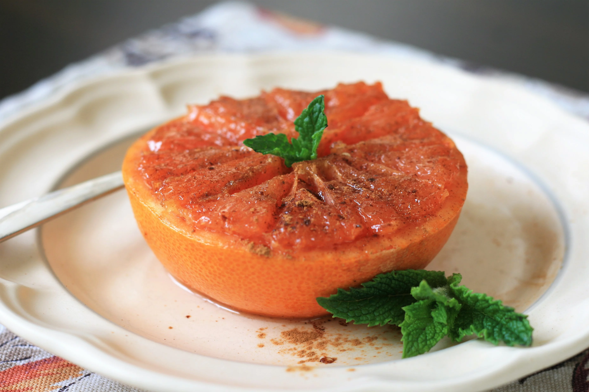

Air Fryer Broiled Grapefruit
I like to add a pinch of sea salt at the end to really bring out the flavors.

This warm and juicy grapefruit with a buttery sweet topping is the perfect accompaniment to your Sunday brunch and also makes a lovely dessert or snack.
Ingredients
- 1 red grapefruit, refrigerated
- 1 tablespoon softened butter
- 1 tablespoon brown sugar
- 2 teaspoons brown sugar
- aluminum foil
- ½ teaspoon ground cinnamon
Steps
-
Preheat the air fryer to 400 degrees F (200 degrees C).
-
Cut grapefruit in half crosswise and slice off a thin sliver off the bottom of each half if the fruit isn't sitting flat. Use a sharp paring knife to cut around the outside edge of the grapefruit and between each segment to make the fruit easier to eat once cooked.
-
Combine softened butter and 1 tablespoon brown sugar in a small bowl. Spread mixture over each grapefruit half. Sprinkle with remaining brown sugar.
-
Cut aluminum foil into two 5-inch squares and place each grapefruit half on one square; fold up the edges to catch any juices. Set in the air fryer basket.
-
Broil in the air fryer until sugar mixture is bubbling, 6 to 7 minutes. Sprinkle fruit with cinnamon before serving.
Return